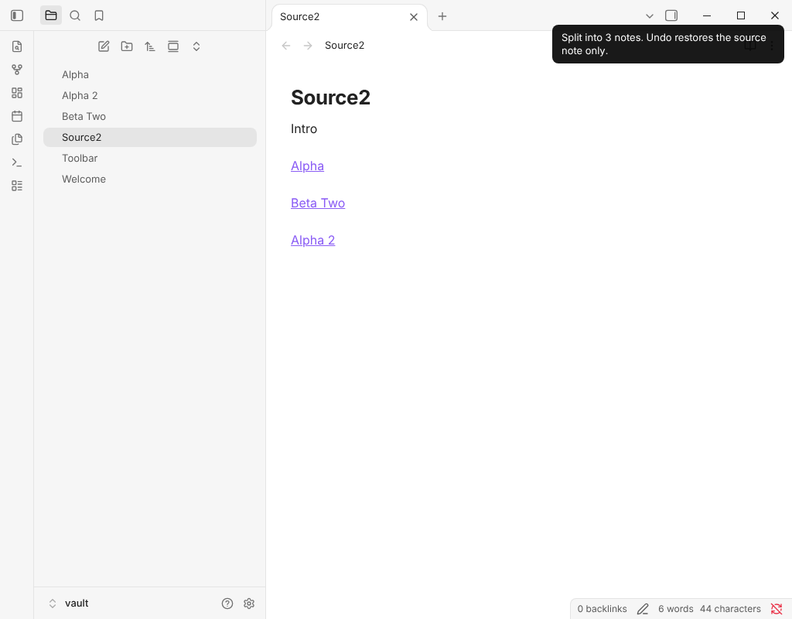

Free Obsidian plugin
Split by Heading
Split a note into one note per heading, with links back in the source.
Install from the Obsidian directory Open in Obsidian Source code and issues

What it does
Split a note into one note per heading, with links back in the source.
Highlights
- Split note by headings (pick level): choose a heading level (the picker shows how many notes each level makes) and every heading of that level becomes its own note. Deeper headings stay inside their note.
- Split note here (heading above): splits only the section under the nearest heading above the cursor.
- Merge linked notes back into this note: the reverse. Every line that holds only a link or embed of another note is replaced by that note's text under a heading named after the note, one level below the heading above it (level 2 when there is none). Select some lines to merge only those. The merged notes are kept unless you turn on "Trash notes after merging them back". One Undo restores the links.
Details
- Version
- 0.2.0
- Needs Obsidian
- 1.6.6 or newer
- Platforms
- Desktop and mobile
- Author
- Siulved54
- Price
- Free and open source